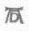

129. BÖLÜM
Aşağıdaki manzaranın gücünü içine çekerken, cam kapıda büyülenmiş bir halde duruyordu. Bilmeden yüzlerce metre yukarı çıktıktan sonra, şimdi hayatında gördüğü en harikulade manzaralardan birini hayranlıkla seyrediyordu.
Ulusal Park’ın doğu ucundaki ABD Kongre Binası’nın kubbesi, bir dağ gibi yükseliyordu. Binanın her iki yanından, ona doğru iki paralel ışık çizgisi uzanıyordu. Bunlar Smithsonian müzelerinin aydınlatılmış cepheleriydi; sanat, tarih, bilim ve kültür abideleri.
Langdon şimdi büyük bir şaşkınlıkla Peter’ın doğru olduğunu iddia ettiği şeylerin gerçekten de doğru olduğunu görüyordu. Gerçekten de sarmal bir merdiven var... ve büyük bir taşın altında yüzlerce metre aşağı iniyor. Bu obeliskin kapak taşı, tam başının üstündeydi. Langdon, ürkütücü derecede benzerlik teşkil eden önemsiz bir bilgiyi hatırladı: Washington Anıtı’nın kapak taşı, tam olarak üç bin üç yüz libre{100} geliyordu.
Yine 33 sayısı.
Bundan daha da şaşırtıcı olanı; bu kapak taşının doruğu, bu dikilitaşın zirvesi, minik ve parlak bir alüminyum ile taçlandırılmıştı, çünkü zamanında altın kadar değerli olan bir metaldi. Washington Anıtı'nın parlak tepesi, Mason Piramidi’yle aynı boyutta, yaklaşık otuz santim kadardı. Bu küçük metal piramidin üstünde inanılmaz bir yazı - Laus Deo - vardı.
Langdon o anda anladı. Taş piramidin tabanındaki asıl mesaj bu.
Yedi sembol bir transliterasyon!{101} Şifrelerin en basiti.
Semboller harf.
Taş ustası gönyesi -L
Altın elementi-AU
Yunanca Sigma-S
Yunanca Delta-D
Simya cıvası- E
Ouroboros-O
Langdon, “Laus Deo, ” diye fısıldadı. “Tanrı’ya şükürler olsun” anlamındaki bu ünlü Latince deyiş, Washington Anıtı’nın tepesine, üç santimlik elyazısı harflerle yazılmıştı. Gözler önünde ama... kimsenin göremeyeceği bir yerde.
Odanın yumuşak ışıklarını açan Peter, arkasından, “Tanrı’ya şükürler olsun,” dedi. “Mason Piramidi’nin son şifresi.”
Langdon arkasını döndü. Arkadaşının yüzünde geniş bir gülümseme vardı. Daha önce mason kütüphanesinde onun “Tanrı’ya şükürler olsun,” dediğini şimdi çok iyi hatırlıyordu. Ama ben hâlâ bir şey anlamadım.
Langdon, efsanevi Mason Piramidi’nin onu buraya yönlendirmesinin ne kadar uygun düştüğünü fark edince ürperdi... Ulusun kalbinden gökyüzüne yükselen, Amerika’nın büyük dikilitaşına -gizemli antik bilgeliğin sembolü- gelmişti.
Kare şeklindeki küçük odada saatin ters yönünde hareket eden Langdon, başka bir seyir penceresinin önüne geldi.
Kuzey.
Kuzeye bakan bu pencereden, tam karşısında duran Beyaz Saray’ın o tanıdık siluetine baktı. Ufukta, kuzeydeki Mabet Evi’ne giden On Altıncı Sokak’ın düz çizgisini gördü.
Heredom ’ın güneyindeyim.
Kenar boyunca giderek diğer pencereye geldi. Batıya bakan Langdon, Lincoln Anıtı’na giden yansıma havuzunun uzun dörtgenini takip etti. Klasik Yunan mimarisine, Atina’daki Partheon, Athena -kahramanlık girişimlerinin tanrıçası- Tapmağı ilham vermişti.
Langdon, annuit coeptis, diye düşündü. Tanrı girişimlerimizi destekler.
Son pencereye giden profesör, karanlıkta parlayan Jefferson Anıtı’nın bulunduğu, Tidal Basin{102} üzerinden güneye doğru baktı. Zarifçe eğimlenen küçük kubbeye, mitolojideki büyük Roma tanrılarının evi olan Panteon’un şeklinin verildiğini biliyordu.
Dört yöne birden bakmış olan Langdon, Ulusal Park’a ait, havadan çekilmiş fotoğrafları düşündü. Dört kolunu Washington Anıtı’ndan pusulanın ana yönlerine doğru uzatıyordu. Amerika'nın kesişen yollarında duruyorum.
Langdon geriye dönüp, Peter’ın durduğu yere geldi. Akıl hocası keyiften ışık saçıyordu. “Evet Robert, işte bu. Kayıp Kelime. Gömülü olduğu yer burası. Mason Piramidi bizi buraya getirdi.”
Langdon sersemlemiş, Kayıp Kelime’yi tamamıyla unutmuştu.
“Robert. senden daha güvenilir birini tanımıyorum. Ve böyle bir geceden sonra, tüm bunların neyle ilgisi olduğunu bilmeyi hak ettiğine inanıyorum. Efsanede vaat edildiği gibi. Kayıp Kelime gerçekten de sarmal merdivenin altında gömülü.” Anıtın uzun merdivenlerinin girişini gösterdi.
Ayakları yerden kesilmiş olan Langdon şimdi de şaşkındı.
Peter hemen elini cebine sokup, küçük bir nesne çıkardı. “Bunu hatırlıyor musun?”
Langdon, Peter’ın ona uzun zaman önce emanet ettiği küp şeklindeki kutuyu eline aldı. “Evet... ama sanırım onu korumayı pek beceremedim.”
Solomon kendi kendine güldü. “Belki de gün ışığına çıkma zamanı gelmişti.”
Taş küpe göz atan Langdon, Peter’ın bunu neden kendisine verdiğini merak ediyordu.
Peter, “Bu sana neyi anımsatıyor?” diye sordu.
1514  bakan Langdon, Katherine paketi açtığında edindiği ilk izlenimi hatırladı. “Bir köşetaşı.”
Peter, “Kesinlikle,” diye cevap verdi. “Şimdi, köşe taşları hakkında bilmediğin birkaç şey olabilir. Birincisi, köşe taşı yerleştirme kavramı, Eski Ahit’ten gelir.”
Langdon başını salladı. “Kitabı Mukaddes’te Mezmurlar Kitabı.” “Doğru. Ve gerçek bir köşe taşı daima yere gömülür; binanın yeryüzünden, gökyüzünün aydınlığına çıkan ilk basamağını temsil eder.”
Kongre Binası’na doğru bakan Langdon, köşe taşı temelinin çok derinlere gömüldüğü için, bugüne kadar yapılan kazılarda bulunamadığını hatırladı.
Solomon, “Son olarak,” dedi. “Elinde tuttuğun taş kutu gibi, köşe taşlarının pek çoğu birer mahzendir... ve içlerinde, gömülü hazineleri saklayabilecekleri boşluklar vardır... bu hazinelere tılsım da diyebilirsin, yükselecek olan binanın geleceğe dair ümitlerini yansıtan bir sembol.”
Bu geleneği Langdon da biliyordu. Masonlar bugün bile, anlamlı nesneleri, mühürledikleri köşe taşlarına yerleştirirlerdi; zaman kapsülleri, fotoğraflar, bildiriler, hatta bazı önemli kişilerin külleri.
Merdivene bir göz atan Solomon, “Sana bunu neden anlattığımı iyi açıklamam gerek,” dedi.
“Kayıp Kelime’nin, Washington Anıtı’nın köşe taşına gömüldüğünü mü düşünüyorsun?”
“Öyle düşünmüyorum, Robert. Biliyorum. Kayıp Kelime bu köşe taşına 4 Temmuz 1848’de, bir mason töreniyle gömüldü.”
Ona bakan Langdon, “Mason kurucularımız bir kelime mi gömdüler?” diye sordu.
Peter başını salladı. “Evet, öyle yaptılar. Gömdükleri şeyin gerçek gücünü biliyorlardı.”
Langdon gece boyunca soyut kavramları anlamaya çalışmıştı... Antik Gizemler, Kayıp Kelime, asırların sırları. Şimdi somut bir şey istiyor ve Peter’ın yüz yetmiş metre aşağılarındaki köşe taşında, her şeye ışık tutacak anahtarın gömülü olduğu iddiasını kabul etmekte güçlük çekiyordu. Hayat boyu gizemlerin üstünde çalıştıkları halde, hâlâ orada saklı olduğu söylenen güce ulaşamamış insanlar var. Etrafında, simyanın gizemli sırlarını keşfetme yolundaki başarısız çabalarında kullandığı gereçlerle oturan Dürer’in Melankoli'deki kederli Bilge’sini hatırladı. Sırlar gerçekten çözülebilse bile, hepsi tek bir yerde bulunamazlar!
Langdon, herhangi bir cevabın yeryüzündeki binlerce cilde yayıldığına inanırdı... Pisagor, Hermes, Heraclitus, Paracelsus ve yüzlercesinin yazılarında şifrelenmişti. Cevap; simya, gizemcilik, sihir ve felsefenin unutulmuş, tozlu kitaplarında yazılıydı. Cevap; antik İskenderiye Kütüphanesinde, Sümerlerin kil tabletlerinde ve Mısır’ın hiyerogliflerinde saklıydı.
Başını iki yana sallayan Langdon, alçak bir sesle, “Peter, üzgünüm,” dedi. “Antik Gizemleri anlamak, yaşam boyu devam eden bir süreçtir. Anahtarın tek bir kelimede bulunacağına akıl sır erdiremiyorum.”
Peter elini Langdon’ın omzuna koydu. “Robert, Kayıp Kelime bir ‘kelime’ değil.” Gururla gülümsedi. “Biz ona ‘kelime’ diyoruz, çünkü eskiler ilk başlarda... öyle derlerdi.”